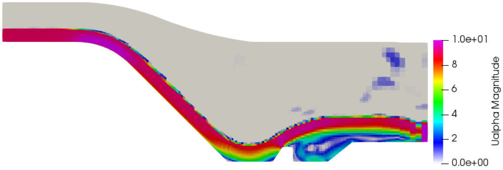
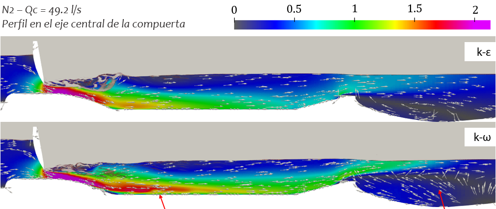

Numerical simulation of external aerodynamic flow over a bridge deck using OpenFOAM.
The study focuses on flow separation, vortex shedding, and force estimation (drag, lift, moment).

Stilling Basin 2D model
Numerical simulation of a stilling basin flow.
The model is a 2D simplification, but worth to analyse. It includes a codedMixed boundary condition to replicate an imposed water depth at the outlet.

Stilling Basin 2D model
Numerical simulation of a stilling basin flow.
The study is a comparison of the models K-Epsilon and K-Omega SST models, following a methodology to evaluate the performance of the stilling basins.